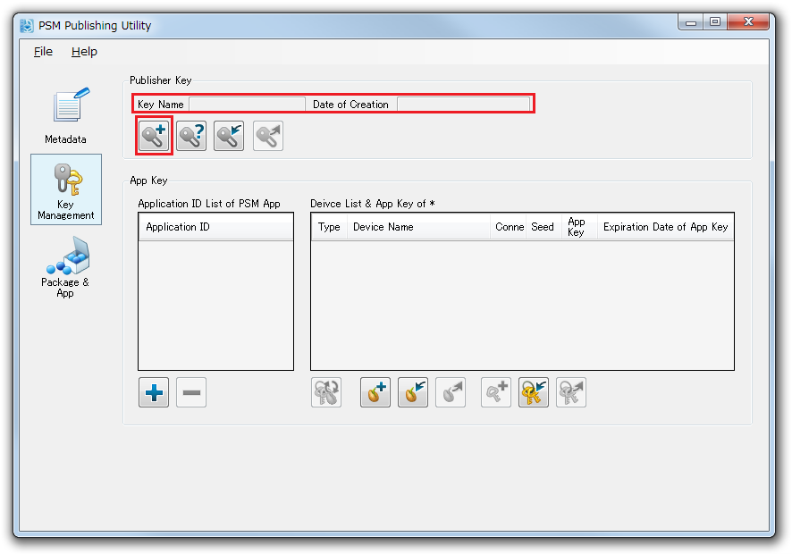
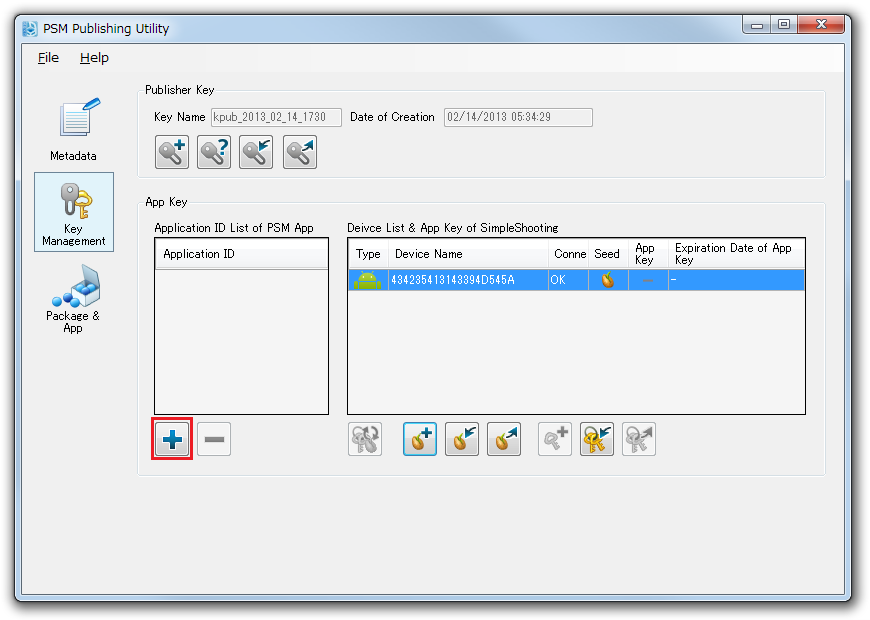
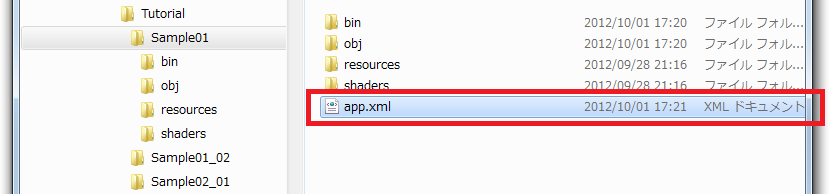
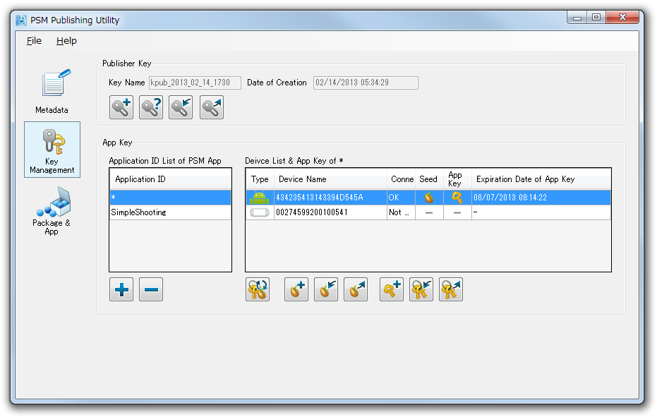

この文書では、PSMアプリを実機上で実行するために必要な鍵の作成手順、および鍵の依存関係について説明します。
Contents
この文書内で「鍵」とは、パブリッシャ鍵、デバイスシード、アプリ鍵を意味します。
実機でPSMアプリを実行するためには、次の手順で鍵を作成します。
- パブリッシャ鍵を作成する。
- 実行したい実機からデバイスシードを作成する。
- 実行したいPSMアプリのApplicationIDを登録し、パブリッシャ鍵とデバイスシードをもとに、アプリ鍵を作成する。
※ 鍵の作成にはSony Entertainment Network(旧 PlayStation(R)Network) のアカウントと、パブリッシャライセンスが必要です。パブリッシャライセンスは弊社のサイト DevPortal で取得してください。
https://psm.playstation.net
鍵の作成は、以下の手順でおこないます。
※ この手順で作成される鍵は、PSM Studioのメニュー - [Key] - [Update Device Seed and App Key] で自動作成されるものと同じです。

図1 鍵の作成手順
パブリッシャ鍵とは、パブリッシャライセンスを持つ人に割り当てられる鍵です。
パブリッシャ鍵の作成は以下の手順で行います。
- デスクトップ上の [Publishing Utility]のアイコンをダブルクリックしてPublishing Utilityを起動してください。

図2 Publishing Utility
- 鍵の作成時に弊社のサーバーと通信をおこなうため、PCをインターネットに接続しておきます。社内LAN環境などでプロキシサーバーを利用している場合、[メニュー] - [ファイル] - [プロキシサーバーの設定]を選択し、接続の設定をおこなってください。
- Publishing Utilityで[Key Management]パネルを選択し、[Generate Publisher Key]ボタンを押します。
図3 [Generate Publisher Key]ボタン
- 表示されるダイアログの指示に従って入力をおこなってください。
- 作成に成功すると、Key NameとDate of Creation の欄にパブリッシャ鍵のデータが表示されます。
デバイスシードとはアプリ鍵を作成するために使用されるデータです。デバイスシードはデバイスから取得し、デバイスごとに異なる値を持ちます。
デバイスシードの作成は以下の手順で行います。
- デバイスをUSBケーブルでPCに接続します。接続するとそのデバイスが[Device List & App Key]リストに表示されます。
- PS Vitaの場合、PS Vita上でDevAssistantを起動しておきます。
- 対象のデバイスを選択し、[Generate Device Seed]ボタンを押すと、デバイスシードの作成を開始します。

図4 デバイスシードの作成
- デバイスシードの作成に成功すると、[Seed]の列に種のアイコンが表示されます。
※ なお、デバイスシードを削除するには、デバイスシードを選択し、 [右クリック] - [Delete Device Seed]を選択して削除します。
アプリ鍵はPSMアプリを実機で実行するために使用される鍵です。
- アプリ鍵は各ApplicationIDと各デバイスごとに作成する必要があります。
- アプリ鍵はパブリッシャ鍵とデバイスシード、PSMアプリのApplicationIDを元に作成されます。
- アプリ鍵には「アプリ開発鍵」と「アプリ実行鍵」の２つがあります。アプリ鍵を作成すると、この２つが自動的に作成されます。
- アプリ開発鍵はプロジェクトのビルド時に使用されます。
- アプリ実行鍵は実機に転送され、PSMアプリの実行時に使用されます。
アプリ鍵の作成は以下の手順で行います。
- まず実機で実行したいPSMアプリのApplicationIDを登録します。鍵管理パネルの[+]ボタンを押してください。
図5 Application IDの登録
- ダイアログが表示されるので[...]ボタンを押し、PSMプロジェクトのapp.xmlを選択します。[OK]ボタンを押すとapp.xml内の Application ID がリストボックスに登録されます。

図6 Application ID
図7 プロジェクト内のapp.xmlを開く
- リストボックス内に表示されている ApplicationIDとデバイスを選択し、[Generate App Key]ボタンを押します。

図8 [Generate App Key]ボタン
- 表示されるダイアログの指示に従って入力をおこなってください。
- アプリ鍵の作成に成功すると[App Key]の列にアプリ鍵が表示され、作業完了です。

図9 App Key
- アプリ鍵作成後、ソリューションをリビルドしてください。以降、アプリ鍵が作成されているPSMアプリが、そのデバイス上で実行可能になります。
※ なお、アプリ鍵を削除するには、アプリ鍵を選択し [右クリック] - [Delete App Key]を選択して削除します。
鍵の依存関係は以下の図のようになります。親の要素を更新した場合、依存関係をもつ子の要素を更新する必要があります。

図10 鍵の依存関係
- パブリッシャ鍵・アプリ鍵・デバイスシードは、作成ごとに毎回違うものが作成されます。
- 実機にインストールするDevAssistant のバージョンが更新されると、デバイスシード、アプリ鍵を再作成する必要があります。
例:
- パブリッシャ鍵を作り直した。-> アプリ鍵を削除し、アプリ鍵を再作成します。
- デバイスシードを作り直した。 -> アプリ鍵を削除し、アプリ鍵を再作成します。
- AndroidのOSをアップデートした。 -> デバイスシードとアプリ鍵を削除し、再作成します。
Application IDにアスタリスク"*"を指定することで、複数のプロジェクトで使いまわしが可能なアプリ鍵を作成することができます。
アスタリスクのアプリ鍵を作成しておくと、PSMアプリごとにアプリ鍵をつくる手間を省くことができます。
※ ただし、マスターパッケージの作成時には"*"は使用できません。
※ 新しいソリューションを作成すると、Application IDはデフォルトで"*"に設定されています。
アスタリスクの指定は以下の手順で行います。
- Publishing Utilityを起動し、MetaDataタブを選択します。
- [メニュー] - [File] - [Load] で任意のapp.xmlを開きます。
- [Application ID] に [*] 一文字を入力し、セーブします。

図11 アスタリスクの指定
- 次に[Key Management]パネルを選択し、[+]ボタンを押します。
図12 ApplicationIDの登録ボタン
- 上記でアスタリスクを指定したapp.xmlを選択します。
- リストボックス内に表示されている ApplicationIDとデバイスを選択し、[Update Device Seed & App Key]ボタンを押します。
- アプリ鍵の作成に成功すると [App Key]列にアプリ鍵のアイコンが表示されます。以後、ApplicationIDに[*]が付けられたプロジェクトは、アプリ鍵を作成することなく、その実機でアプリを実行することができます。
図13 作成されたアプリ鍵
PSMアプリが実行可能な実機は、ひとつのSony Entertainment Networkアカウントにつき100台までです。
PS Vita で実行する場合、ひとつのSony Entertainment Networkアカウントにつき使用出来る台数の上限は2台までとなります。
参考: http://manuals.playstation.net/document/jp/psvita/psn/aboutactivate.html
PCシミュレータで実行する場合、パブリッシャライセンスおよび鍵は必要ありません。
- パブリッシャ鍵の作成は1度だけで構いません。SDKバージョンが更新されても継続して使用することができます。
- パブリッシャ鍵に有効期限はありません。
- パブリッシャ鍵は作成時にSCEサーバーに登録されます。
- パブリッシャ鍵はひとつのSony Entertainment Networkアカウントに対して、最後に作成されたひとつのパブリッシャ鍵のみ有効です。
- Sony Entertainment Networkアカウントとパブリッシャ鍵をチームで共有するときは、パブリッシャ鍵の上書きに注意してください。
- 例:
- 開発メンバーAが、SENアカウント P_team でパブリッシャ鍵 A_pub_key を作成。
- その後、開発メンバーBが、同じアカウントでパブリッシャ鍵 B_pub_keyを作成。このとき、B_pub_keyが有効になり、上書きされた A_pub_key は無効になります。またこのとき、パブリッシャ鍵 A_pub_keyで作成したアプリ鍵も無効になります。
この場合、開発メンバーBは パブリッシャ鍵 B_pub_key をエクスポートして、開発メンバーAに渡してください。
- 開発者が保持するパブリッシャ鍵の有効性は、[Check Publisher Key]コマンドで確認することができます。
- PSM Studio なら- [Menu] - [Key] - [Check Publisher Key]で実行。
- Publishing Utilityなら - [Key Management]パネル - [Check Publisher Key]で実行。
- DevAssistant の新しいバージョンをインストールした場合、それ以前に作成したデバイスシードは無効になります。デバイスシードを削除後、新しいデバイスシードを作成してください。
- AndroidデバイスのOSを更新した場合、更新以前に作成したデバイスシードは無効になります。デバイスシードを削除後、新しいデバイスシードを作成してください。
- アプリ鍵はSDKを再インストールすると使えなくなります。再インストール時、鍵を削除するダイアログが表示されるので、[はい]を選択して削除し、再作成してください。
- アプリ鍵の有効期限は3ヶ月です。
複数人で鍵を運用する場合は、 開発チームでの鍵の運用 をご覧ください。